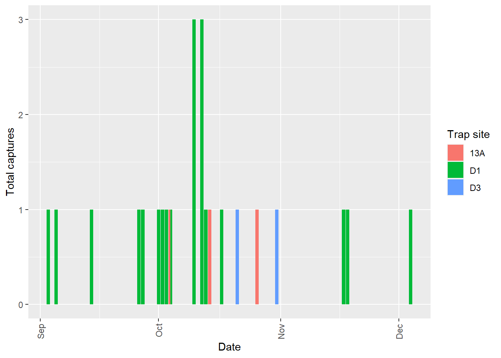

Having some fun exploring
Gavin Masterson
2020-10-12
Last updated: 2020-11-08
Checks: 6 1
Knit directory: reptiles_fire/
This reproducible R Markdown analysis was created with workflowr (version 1.6.2). The Checks tab describes the reproducibility checks that were applied when the results were created. The Past versions tab lists the development history.
The R Markdown file has unstaged changes. To know which version of the R Markdown file created these results, you’ll want to first commit it to the Git repo. If you’re still working on the analysis, you can ignore this warning. When you’re finished, you can run wflow_publish to commit the R Markdown file and build the HTML.
Great job! The global environment was empty. Objects defined in the global environment can affect the analysis in your R Markdown file in unknown ways. For reproduciblity it’s best to always run the code in an empty environment.
The command set.seed(20201010) was run prior to running the code in the R Markdown file. Setting a seed ensures that any results that rely on randomness, e.g. subsampling or permutations, are reproducible.
Great job! Recording the operating system, R version, and package versions is critical for reproducibility.
Nice! There were no cached chunks for this analysis, so you can be confident that you successfully produced the results during this run.
Great job! Using relative paths to the files within your workflowr project makes it easier to run your code on other machines.
Great! You are using Git for version control. Tracking code development and connecting the code version to the results is critical for reproducibility.
The results in this page were generated with repository version db7c3fd. See the Past versions tab to see a history of the changes made to the R Markdown and HTML files.
Note that you need to be careful to ensure that all relevant files for the analysis have been committed to Git prior to generating the results (you can use wflow_publish or wflow_git_commit). workflowr only checks the R Markdown file, but you know if there are other scripts or data files that it depends on. Below is the status of the Git repository when the results were generated:
Ignored files:
Ignored: .Rproj.user/
Ignored: data/2019_common_itis.tsv.bz2
Ignored: data/2019_dwc_itis.tsv.bz2
Ignored: data/database/
Unstaged changes:
Modified: analysis/exploring.Rmd
Note that any generated files, e.g. HTML, png, CSS, etc., are not included in this status report because it is ok for generated content to have uncommitted changes.
These are the previous versions of the repository in which changes were made to the R Markdown (analysis/exploring.Rmd) and HTML (docs/exploring.html) files. If you’ve configured a remote Git repository (see ?wflow_git_remote), click on the hyperlinks in the table below to view the files as they were in that past version.
| File | Version | Author | Date | Message |
|---|---|---|---|---|
| Rmd | db7c3fd | GavinMasterson | 2020-11-08 | commit before first test build |
| Rmd | 3bf0748 | GavinMasterson | 2020-11-02 | ordered phase levels for plotting, need to add 0 columns for no captures per species per |
| Rmd | eb0fa44 | GavinMasterson | 2020-10-31 | tinkering with dataviz |
| Rmd | bc1e761 | GavinMasterson | 2020-10-28 | moved code from dataprep.R to exploring.Rmd as it is actually an analysis |
| Rmd | 4180495 | GavinMasterson | 2020-10-27 | finished the species_data file code and streamlined the code |
| Rmd | db14405 | GavinMasterson | 2020-10-18 | lots of data cleaning and normalising (separating dfs) |
| Rmd | 938e64a | GavinMasterson | 2020-10-15 | working on ggplots to visualise summary data |
| Rmd | 39e995f | GavinMasterson | 2020-10-14 | updates to exploring.Rmd |
| Rmd | db7d988 | GavinMasterson | 2020-10-12 | building the first Rmd doc |
Introduction
The raw data from my survey have been captured, cleaned and are now ready for exploratory analysis. As the survey was quite complex from a methodological and practical perspective, I will produce summaries and visualisations of the relevant survey components and variables. These summaries will help me in identifying any issues that may influence my desired analysis path. Keeping with best practice, we first load the required R packages and the data we will use for the exploratory analysis.
library(tidyverse)
library(lubridate)
library(here)
data <- read_csv(here("/data/clean_data.csv")) %>%
mutate_if(is.character, as.factor) %>%
mutate(date = as_date(date),
arm = as_factor(arm),
block = as_factor(block),
phase = factor(phase, levels = c("pre-treatment", "post-treatment")))The total number of species detected during the survey
Suikerbosrand Nature Reserve has been surveyed for reptiles several times since its proclamation in 1973 e.g. Jacobsen et al. (1986) and Masterson et al. (2008). From these surveys, we know that there are approximately 40 species of reptile that have ever been recorded in or near Suikerbosrand Nature Reserve since 1973. Determining the total number of species detected during this survey is an important first step in gauging the general success of the survey.
data %>%
drop_na(species) %>%
summarise(total_species = n_distinct(species))# A tibble: 1 x 1
total_species
<int>
1 20Twenty species is just half of the estimated 40 reptile species that might be present in the reserve, so how well did we really do? While we might have hoped to capture a greater number of the species, there are two reasons that we need not be too concerned with only having caught 21 species. Firstly, the survey was not aiming to catch all the species in the reserve. This survey aimed to understand the effects of disturbance on the local assemblages in one type of habitat - open grassland. Secondly, there is no reason to expect that all 40 species that have ever been recorded in Suikerbosrand Nature Reserve are still present in the reserve. The most intense survey of the reserve was conducted by Niels Jacobsen in the 1980’s and the surrounding area, now called Gauteng Province, has undergone rapid intensification of land use in the past 30+ years. Therefore, the positive view of this survey is that we can confidently say that at least 21 reptile species still occur in Suikerbosrand Nature Reserve.
The total number of captures per day when traps were checked
zero_dates <- data[which(is.na(data$species) == TRUE), 1:2] %>%
mutate(total_captures = as.integer(0))
data %>%
drop_na(species) %>%
group_by(date, phase, trap_type) %>%
summarise(total_captures = n(),
.groups = "drop") %>%
full_join(zero_dates) %>%
arrange(date) %>%
ggplot(., mapping = aes(x = date,
y = total_captures)) +
geom_col(aes(fill = trap_type)) +
xlab("Date") +
guides(x = guide_axis(angle = 90)) +
ylab("Total captures") +
labs(fill = "Trap type") +
scale_fill_discrete(na.translate=FALSE)
The total number of detections for each species in each phase
data %>%
drop_na(species) %>%
count(species,
phase,
.drop = FALSE,
name = "total_captures") %>%
ggplot(., mapping = aes(x = species,
y = total_captures)) +
geom_col(aes(fill = phase),
position = position_dodge()) +
xlab("Species") +
guides(x = guide_axis(angle = 90)) +
ylab("Total captures") +
labs(fill = "Phase")
The total captures of each species detected at each trap site
sitephase_summary <- data %>%
drop_na(species) %>%
count(trap_site,
species,
phase,
.drop = FALSE,
name = "captures")
sitephase_summary %>%
ggplot(mapping = aes(x = species,
y = captures)) +
geom_col(aes(fill = phase),
position = "stack") +
xlab("Species") +
guides(x = guide_axis(angle = 90)) +
ylab("Total captures") +
labs(fill = "Phase") +
facet_wrap("trap_site",
nrow = 4,
scale = "free_y")
Species captures per site per day
One of the considerations when using hierarchical models is whether to use detection or abundance data to model species occupancy. Reptiles do not have to be active every day like mammals, which means that there are unlikely to be multiple encounters with trap arrays on a daily basis. As a result, I expected to catch just a single individual per trap array per day of checking.
sitephaseday_summary <- data %>%
count(trap_site,
species,
phase,
date,
name = "count_per_day")
sitephaseday_summary %>%
filter(count_per_day > 1) %>%
group_by(species) %>%
summarise(count_of_non_singleton_days = n(),
max_captures = max(count_per_day)) %>%
arrange(desc(count_of_non_singleton_days))# A tibble: 7 x 3
species count_of_non_singleton_days max_captures
<fct> <int> <int>
1 Gerrhosaurus flavigularis 20 5
2 Trachylepis capensis 15 3
3 Panaspis wahlbergii 5 2
4 Trachylepis varia 4 3
5 Agama aculeata distanti 2 3
6 Psammophis crucifer 2 2
7 Hemachatus haemachatus 1 2This summary shows me the seven species which did not match my expectation, in descending order of non-singleton days. The first five are the common lizard species in Suikerbosrand Nature Reserve, and the last two are snake species.
One other question we might ask is whether or not the number of non-singleton days was different between the pre-treatment and post-treatment phases of the project.
sitephaseday_summary %>%
filter(count_per_day > 1) %>%
group_by(species,phase) %>%
summarise(count_of_non_singleton_days = n(),
.groups = "drop") %>%
arrange(desc(count_of_non_singleton_days))# A tibble: 11 x 3
species phase count_of_non_singleton_days
<fct> <fct> <int>
1 Gerrhosaurus flavigularis pre-treatment 10
2 Gerrhosaurus flavigularis post-treatment 10
3 Trachylepis capensis pre-treatment 8
4 Trachylepis capensis post-treatment 7
5 Panaspis wahlbergii post-treatment 5
6 Agama aculeata distanti pre-treatment 2
7 Trachylepis varia pre-treatment 2
8 Trachylepis varia post-treatment 2
9 Hemachatus haemachatus post-treatment 1
10 Psammophis crucifer pre-treatment 1
11 Psammophis crucifer post-treatment 1Incredibly, we see a near-perfect, 50-50 split of non-singleton days between the two phases for four of the species. The three species for which the split is not even are P. wahlbergii (pre 0:5 post), A. a. distanti (pre 2:0 post) and H. haemachatus (pre 0:1 post). Of these three species, only A. a. distanti is deserving of further consideration. Knowing that the species was infrequently captured during the survey - with zero captures in the post-treatment phase of the project - it is important to consider how much data could be lost if we reduce these non-singleton days to singletons for use in an ‘any detection per day’ formulation of our hierarchical model.
sitephaseday_summary %>%
filter(species == "Agama aculeata distanti") %>%
ggplot(., mapping = aes(x = date,
y = count_per_day)) +
geom_col(aes(fill = trap_site),
position = "dodge") +
xlab("Date") +
guides(x = guide_axis(angle = 90)) +
ylab("Total captures") +
labs(fill = "Trap site")
This shows that I captured three individuals at D1 on both of the non-singleton days, which were only two days apart in October 2005. This means that six detections of A. a. distanti would be reduced to two detections using a ‘detection per site per day’ approach, and reduce the total number of detections from 25 to 21 - a 16 percent reduction.
sessionInfo()R version 3.6.3 (2020-02-29)
Platform: x86_64-w64-mingw32/x64 (64-bit)
Running under: Windows 10 x64 (build 19041)
Matrix products: default
locale:
[1] LC_COLLATE=English_United Kingdom.1252
[2] LC_CTYPE=English_United Kingdom.1252
[3] LC_MONETARY=English_United Kingdom.1252
[4] LC_NUMERIC=C
[5] LC_TIME=English_United Kingdom.1252
attached base packages:
[1] stats graphics grDevices utils datasets methods base
other attached packages:
[1] here_0.1 lubridate_1.7.9 forcats_0.5.0 stringr_1.4.0
[5] dplyr_1.0.2 purrr_0.3.4 readr_1.3.1 tidyr_1.1.2
[9] tibble_3.0.3 ggplot2_3.3.2 tidyverse_1.3.0 workflowr_1.6.2
loaded via a namespace (and not attached):
[1] tidyselect_1.1.0 xfun_0.17 haven_2.3.1 colorspace_1.4-1
[5] vctrs_0.3.4 generics_0.0.2 htmltools_0.5.0 yaml_2.2.1
[9] utf8_1.1.4 blob_1.2.1 rlang_0.4.7 later_1.1.0.1
[13] pillar_1.4.6 withr_2.2.0 glue_1.4.2 DBI_1.1.0
[17] dbplyr_1.4.4 modelr_0.1.8 readxl_1.3.1 lifecycle_0.2.0
[21] munsell_0.5.0 gtable_0.3.0 cellranger_1.1.0 rvest_0.3.6
[25] evaluate_0.14 labeling_0.3 knitr_1.29 httpuv_1.5.4
[29] fansi_0.4.1 broom_0.7.0 Rcpp_1.0.5 promises_1.1.1
[33] backports_1.1.10 scales_1.1.1 jsonlite_1.7.1 farver_2.0.3
[37] fs_1.5.0 hms_0.5.3 digest_0.6.25 stringi_1.4.6
[41] rprojroot_1.3-2 grid_3.6.3 cli_2.0.2 tools_3.6.3
[45] magrittr_1.5 crayon_1.3.4 whisker_0.4 pkgconfig_2.0.3
[49] ellipsis_0.3.1 xml2_1.3.2 reprex_0.3.0 assertthat_0.2.1
[53] rmarkdown_2.3 httr_1.4.2 rstudioapi_0.11 R6_2.4.1
[57] git2r_0.27.1 compiler_3.6.3